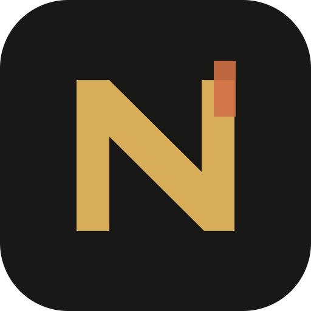

Identité publique
Handle, nom affiché, bio, visibilité, rôle créateur et collections. Contrat : public-profile.schema.json.

Nova ForgeIdentité publique · WebAuthn · provider-neutral
Un profil public ne contient ni credential, ni session, ni mécanisme de récupération. Les passkeys restent des credentials WebAuthn ; Nova Forge n’a jamais besoin de stocker leur clé privée.
Frontières
Handle, nom affiché, bio, visibilité, rôle créateur et collections. Contrat : public-profile.schema.json.
Passkeys WebAuthn actives ou révoquées, algorithme public, transports et politique de vérification utilisateur. Aucune clé privée dans Nova Forge.
État distinct du credential principal. Aucun mécanisme n’est présenté comme configuré sans preuve réelle.
Journal utilisateur des sessions actives, révoquées ou expirées, séparé du profil public.
Publication, modération et changements de sécurité exigent une ré-authentification récente.
Détection locale
État non vérifié.
État non vérifié.
État non vérifié.
Ces contrôles mesurent uniquement la disponibilité d’API dans le navigateur. Ils ne prouvent pas qu’un compte existe, qu’une passkey est enregistrée, ni qu’une authentification a réussi.
Contrats publics